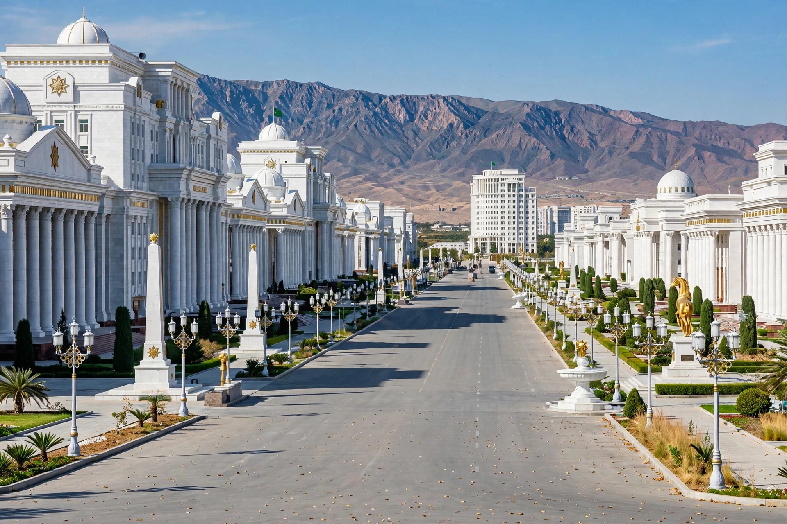

[Image placeholder: White-marble government buildings in Ashgabat]| Country | Turkmenistan |
|---|---|
| Population | About 1 million (estimates) |
| Founded | 1881 (Russian fort); ancient Konjikala nearby |
| Known for | White-marble architecture; Guinness records for marble-clad buildings |
**Ashgabat** is the capital and largest city of Turkmenistan, in Central Asia, set in an oasis at the foot of the Kopet Dag mountains near the Iranian border. The name is often rendered 'city of love' from Persian. Modern Ashgabat is famous — and notorious — for its vast white-marble government architecture, wide empty boulevards, and monumental tributes to the post-Soviet regime.
The city was founded as a Russian military post in 1881 near the ancient Parthian site of Konjikala and was almost entirely destroyed by a catastrophic earthquake in October 1948, which may have killed a large fraction of its population; the toll was suppressed by Soviet authorities.
Under President Saparmurat Niyazov ('Turkmenbashi') and his successor Gurbanguly Berdimuhamedow, Ashgabat was rebuilt with record-breaking marble-clad ministries, the Neutrality Monument, the Alem ferris wheel (the world's largest in an enclosed space) and the vast Olympic complex built for the 2017 Asian Indoor and Martial Arts Games.
Turkmenistan is among the world's most closed states; Ashgabat's gleaming centre contrasts with restricted internet, tight controls on movement and media, and suburbs where most residents live more modestly. The Karakum Canal brings Amu Darya water across the desert to the city.